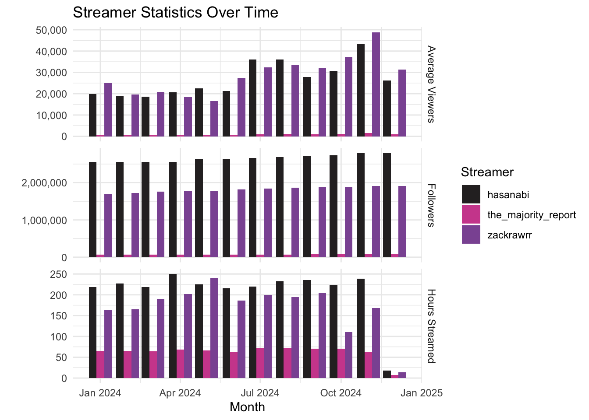

if (!require("pacman")) install.packages("pacman")
pacman::p_load(
here, taylor,
magrittr, janitor,
ggpubr,
gt, gtExtras,
countdown,
quanteda, # quanteda text processing
quanteda.textplots,
easystats, tidyverse
)🔨 Text as data in R
Tutorial - Session 07
Background
Preparation
# Import data from URL
chats <- qs::qread(here("local_data/chat-debates_full.qs"))$correct
transcripts <- qs::qread(here("local_data/transcripts-debates_full.qs"))$correct
streamer_stats <- qs::qread(here("local_data/twitch_streamer_stats.qs"))Codechunks aus der Sitzung
Überblick über verschiedenen Statistiken der betrachteten Streamer
streamer_stats %>%
pivot_longer(cols = c(avg_viewers, followers, hours_streamed), names_to = "statistic", values_to = "value") %>%
ggplot(aes(x = month, y = value, fill = streamer)) +
geom_bar(stat = "identity", position = "dodge") +
facet_grid(statistic ~ ., scales = "free_y", labeller = as_labeller(c(
avg_viewers = "Average Viewers",
followers = "Followers",
hours_streamed = "Hours Streamed"))) +
theme_minimal() +
labs(
x = "Month",
y = "",
title = "Streamer Statistics Over Time",
fill = "Streamer") +
scale_y_continuous(labels = scales::comma) +
ggsci::scale_fill_cosmic()
Überblick über den chats-Datensatz
chats %>% glimpseRows: 913,375
Columns: 33
$ streamer <chr> "hasanabi", "hasanabi", "hasanabi", "hasanabi", …
$ url <chr> "https://www.twitch.tv/videos/2247664726", "http…
$ platform <chr> "twitch", "twitch", "twitch", "twitch", "twitch"…
$ debate <chr> "presidential", "presidential", "presidential", …
$ user_name <chr> "bendaspur", "spackle_pirate", "texaschollima", …
$ user_id <chr> "54058406", "182041182", "185502300", "159018462…
$ user_display_name <chr> "BenDaSpur", "spackle_pirate", "TexasChollima", …
$ user_badges <list> [], [], [], [["twitch_recap_2023", 1, "Twitch R…
$ message_timestamp <dbl> 19, 19, 20, 20, 21, 21, 22, 22, 24, 25, 25, 25, …
$ message_id <chr> "dc03b89a-722d-4eaa-a895-736533a68aca", "6be50e1…
$ message_type <chr> "text_message", "text_message", "text_message", …
$ message_content <chr> "60fps LETSGO 60fps LETSGO 60fps LETSGO 60fps LE…
$ message_emotes <list> [], [], [], [], [], [], [], [], [], [], [], [["…
$ message_length <int> 51, 17, 20, 27, 35, 14, 20, 5, 10, 9, 106, 97, 3…
$ message_timecode <Period> 19S, 19S, 20S, 20S, 21S, 21S, 22S, 22S, 24S, …
$ message_time <chr> "00:00:19", "00:00:19", "00:00:20", "00:00:20", …
$ message_during_debate <dbl> 0, 0, 0, 0, 0, 0, 0, 0, 0, 0, 0, 0, 0, 0, 0, 0, …
$ user_has_badge <dbl> 0, 0, 0, 1, 1, 1, 1, 1, 0, 0, 1, 1, 1, 1, 1, 0, …
$ user_is_premium <dbl> 0, 0, 0, 0, 0, 0, 0, 0, 0, 0, 1, 0, 0, 0, 1, 0, …
$ user_is_subscriber <dbl> 0, 0, 0, 0, 0, 0, 0, 0, 0, 0, 1, 0, 0, 0, 0, 0, …
$ user_is_turbo <dbl> 0, 0, 0, 0, 0, 0, 0, 0, 0, 0, 0, 0, 0, 0, 0, 0, …
$ user_is_moderator <dbl> 0, 0, 0, 0, 0, 0, 0, 0, 0, 0, 0, 1, 0, 0, 0, 0, …
$ user_is_partner <dbl> 0, 0, 0, 0, 0, 0, 0, 0, 0, 0, 0, 1, 0, 0, 0, 0, …
$ user_is_subgifter <dbl> 0, 0, 0, 0, 0, 0, 0, 0, 0, 0, 0, 0, 0, 0, 0, 0, …
$ user_is_broadcaster <dbl> 0, 0, 0, 0, 0, 0, 0, 0, 0, 0, 0, 0, 0, 0, 0, 0, …
$ user_is_vip <dbl> 0, 0, 0, 0, 0, 0, 0, 0, 0, 0, 0, 0, 0, 0, 0, 0, …
$ user_is_twitchdj <dbl> 0, 0, 0, 0, 0, 0, 0, 0, 0, 0, 0, 0, 0, 0, 0, 0, …
$ user_is_founder <dbl> 0, 0, 0, 0, 0, 0, 0, 0, 0, 0, 0, 0, 0, 0, 0, 0, …
$ user_is_staff <dbl> 0, 0, 0, 0, 0, 0, 0, 0, 0, 0, 0, 0, 0, 0, 0, 0, …
$ user_is_game_dev <dbl> 0, 0, 0, 0, 0, 0, 0, 0, 0, 0, 0, 0, 0, 0, 0, 0, …
$ user_is_ambassador <dbl> 0, 0, 0, 0, 0, 0, 0, 0, 0, 0, 0, 0, 0, 0, 0, 0, …
$ user_no_audio <dbl> 0, 0, 0, 0, 0, 0, 0, 0, 0, 0, 0, 0, 0, 0, 0, 0, …
$ user_no_video <dbl> 0, 0, 0, 0, 0, 0, 0, 0, 0, 0, 0, 0, 0, 0, 0, 0, …chats %>% skimr::skim()| Name | Piped data |
| Number of rows | 913375 |
| Number of columns | 33 |
| _______________________ | |
| Column type frequency: | |
| character | 11 |
| list | 2 |
| numeric | 19 |
| Timespan | 1 |
| ________________________ | |
| Group variables | None |
Variable type: character
| skim_variable | n_missing | complete_rate | min | max | empty | n_unique | whitespace |
|---|---|---|---|---|---|---|---|
| streamer | 0 | 1 | 8 | 19 | 0 | 3 | 0 |
| url | 0 | 1 | 39 | 43 | 0 | 6 | 0 |
| platform | 0 | 1 | 6 | 7 | 0 | 2 | 0 |
| debate | 0 | 1 | 12 | 17 | 0 | 2 | 0 |
| user_name | 0 | 1 | 0 | 36 | 9 | 89201 | 0 |
| user_id | 0 | 1 | 2 | 24 | 0 | 89055 | 0 |
| user_display_name | 0 | 1 | 0 | 36 | 9 | 89217 | 0 |
| message_id | 0 | 1 | 36 | 40 | 0 | 913375 | 0 |
| message_type | 0 | 1 | 12 | 12 | 0 | 1 | 0 |
| message_content | 0 | 1 | 0 | 601 | 121 | 589125 | 1 |
| message_time | 0 | 1 | 8 | 8 | 0 | 38911 | 0 |
Variable type: list
| skim_variable | n_missing | complete_rate | n_unique | min_length | max_length |
|---|---|---|---|---|---|
| user_badges | 0 | 1 | 707 | 0 | 3 |
| message_emotes | 0 | 1 | 15840 | 0 | 13 |
Variable type: numeric
| skim_variable | n_missing | complete_rate | mean | sd | p0 | p25 | p50 | p75 | p100 | hist |
|---|---|---|---|---|---|---|---|---|---|---|
| message_timestamp | 0 | 1 | 20052.35 | 11102.30 | -152 | 9498 | 22129 | 29762 | 38954 | ▆▅▅▇▆ |
| message_length | 0 | 1 | 26.71 | 31.68 | 0 | 7 | 16 | 34 | 601 | ▇▁▁▁▁ |
| message_during_debate | 0 | 1 | 0.28 | 0.45 | 0 | 0 | 0 | 1 | 1 | ▇▁▁▁▃ |
| user_has_badge | 0 | 1 | 0.64 | 0.48 | 0 | 0 | 1 | 1 | 1 | ▅▁▁▁▇ |
| user_is_premium | 42 | 1 | 0.21 | 0.41 | 0 | 0 | 0 | 0 | 1 | ▇▁▁▁▂ |
| user_is_subscriber | 42 | 1 | 0.12 | 0.32 | 0 | 0 | 0 | 0 | 1 | ▇▁▁▁▁ |
| user_is_turbo | 42 | 1 | 0.03 | 0.17 | 0 | 0 | 0 | 0 | 1 | ▇▁▁▁▁ |
| user_is_moderator | 42 | 1 | 0.02 | 0.14 | 0 | 0 | 0 | 0 | 1 | ▇▁▁▁▁ |
| user_is_partner | 42 | 1 | 0.02 | 0.13 | 0 | 0 | 0 | 0 | 1 | ▇▁▁▁▁ |
| user_is_subgifter | 42 | 1 | 0.00 | 0.00 | 0 | 0 | 0 | 0 | 0 | ▁▁▇▁▁ |
| user_is_broadcaster | 42 | 1 | 0.00 | 0.03 | 0 | 0 | 0 | 0 | 1 | ▇▁▁▁▁ |
| user_is_vip | 42 | 1 | 0.00 | 0.03 | 0 | 0 | 0 | 0 | 1 | ▇▁▁▁▁ |
| user_is_twitchdj | 42 | 1 | 0.00 | 0.02 | 0 | 0 | 0 | 0 | 1 | ▇▁▁▁▁ |
| user_is_founder | 42 | 1 | 0.00 | 0.02 | 0 | 0 | 0 | 0 | 1 | ▇▁▁▁▁ |
| user_is_staff | 42 | 1 | 0.00 | 0.01 | 0 | 0 | 0 | 0 | 1 | ▇▁▁▁▁ |
| user_is_game_dev | 42 | 1 | 0.00 | 0.01 | 0 | 0 | 0 | 0 | 1 | ▇▁▁▁▁ |
| user_is_ambassador | 42 | 1 | 0.00 | 0.00 | 0 | 0 | 0 | 0 | 1 | ▇▁▁▁▁ |
| user_no_audio | 42 | 1 | 0.02 | 0.14 | 0 | 0 | 0 | 0 | 1 | ▇▁▁▁▁ |
| user_no_video | 42 | 1 | 0.01 | 0.12 | 0 | 0 | 0 | 0 | 1 | ▇▁▁▁▁ |
Variable type: Timespan
| skim_variable | n_missing | complete_rate | min | max | median | n_unique |
|---|---|---|---|---|---|---|
| message_timecode | 0 | 1 | -59 | 60 | 6H 8M 49S | 17167 |
Kurzer Überblick über den transcripts-Datensatz
transcripts %>% glimpse Rows: 5,861
Columns: 12
$ id_sequence <chr> "p1_s0001", "p1_s0002", "p1_s0003", "p1_s0004",…
$ source <chr> "presidential_debate-abc", "presidential_debate…
$ speaker <chr> "S27", "S35", "S27", "S55", "S61", "S55", "S43"…
$ timestamp <time> 00:00:00, 00:00:11, 00:00:20, 00:00:34, 00:00:…
$ dialogue <chr> "Tonight, the high-stakes showdown here in Phil…
$ dialogue_length <int> 229, 148, 245, 91, 31, 13, 37, 102, 316, 409, 6…
$ duration <dbl> 11, 9, 14, 6, 4, 1, 4, 10, 17, 21, 28, 8, 13, 4…
$ debate <chr> "presidential", "presidential", "presidential",…
$ streamer <chr> "tv_station", "tv_station", "tv_station", "tv_s…
$ id_streamer <dbl> 1, 1, 1, 1, 1, 1, 1, 1, 1, 1, 1, 1, 1, 1, 1, 1,…
$ id_speaker <chr> "p1_s27", "p1_s35", "p1_s27", "p1_s55", "p1_s61…
$ sequence_during_debate <dbl> 1, 1, 1, 1, 1, 1, 1, 1, 1, 1, 1, 1, 1, 1, 1, 1,…transcripts %>% skimr::skim()| Name | Piped data |
| Number of rows | 5861 |
| Number of columns | 12 |
| _______________________ | |
| Column type frequency: | |
| character | 7 |
| difftime | 1 |
| numeric | 4 |
| ________________________ | |
| Group variables | None |
Variable type: character
| skim_variable | n_missing | complete_rate | min | max | empty | n_unique | whitespace |
|---|---|---|---|---|---|---|---|
| id_sequence | 0 | 1 | 8 | 9 | 0 | 5861 | 0 |
| source | 0 | 1 | 23 | 44 | 0 | 8 | 0 |
| speaker | 0 | 1 | 3 | 4 | 0 | 152 | 0 |
| dialogue | 0 | 1 | 2 | 16523 | 0 | 5697 | 0 |
| debate | 0 | 1 | 12 | 17 | 0 | 2 | 0 |
| streamer | 0 | 1 | 8 | 19 | 0 | 4 | 0 |
| id_speaker | 0 | 1 | 6 | 8 | 0 | 640 | 0 |
Variable type: difftime
| skim_variable | n_missing | complete_rate | min | max | median | n_unique |
|---|---|---|---|---|---|---|
| timestamp | 0 | 1 | 0 secs | 38738 secs | 03:33:08 | 5433 |
Variable type: numeric
| skim_variable | n_missing | complete_rate | mean | sd | p0 | p25 | p50 | p75 | p100 | hist |
|---|---|---|---|---|---|---|---|---|---|---|
| dialogue_length | 0 | 1 | 460.75 | 887.09 | 2 | 66 | 163 | 507 | 16523 | ▇▁▁▁▁ |
| duration | 8 | 1 | 30.72 | 59.80 | 0 | 5 | 12 | 33 | 1079 | ▇▁▁▁▁ |
| id_streamer | 0 | 1 | 2.73 | 1.11 | 1 | 2 | 2 | 4 | 4 | ▃▇▁▂▇ |
| sequence_during_debate | 0 | 1 | 0.29 | 0.45 | 0 | 0 | 0 | 1 | 1 | ▇▁▁▁▃ |
Arbeiten mit quanteda: corpus
# Create corpus
corp_transcripts <- transcripts %>%
quanteda::corpus(
docid_field = "id_sequence",
text_field = "dialogue"
)
# Output
corp_transcriptsCorpus consisting of 5,861 documents and 10 docvars.
p1_s0001 :
"Tonight, the high-stakes showdown here in Philadelphia betwe..."
p1_s0002 :
"A historic race for president upended just weeks ago, Presid..."
p1_s0003 :
"The candidates separated by the smallest of margins, essenti..."
p1_s0004 :
"This is an ABC News special. The most consequential moment o..."
p1_s0005 :
"Together, we'll chart a... (..)"
p1_s0006 :
"Donald Trump."
[ reached max_ndoc ... 5,855 more documents ]Einfluss der Preporcessing-Schritte am Beispiel
Einfache Tokenisierung
# Tokenize corpus
toks_simple <- corp_transcripts %>%
quanteda::tokens()
# Output
head(toks_simple[[1]], 100) [1] "Tonight" "," "the" "high-stakes" "showdown"
[6] "here" "in" "Philadelphia" "between" "Vice"
[11] "President" "Kamala" "Harris" "and" "former"
[16] "President" "Donald" "Trump" "." "Their"
[21] "first" "face-to-face" "meeting" "in" "this"
[26] "presidential" "election" "," "their" "first"
[31] "face-to-face" "meeting" "ever" "." mit Entfernung von Satz- und Sonderzeichen
toks_nopunct <- corp_transcripts %>%
quanteda::tokens(
remove_punct = TRUE,
remove_symbols = TRUE,
remove_numbers = TRUE,
remove_url = TRUE,
split_hyphens = FALSE,
split_tags = FALSE
)
head(toks_nopunct[[1]], 100) [1] "Tonight" "the" "high-stakes" "showdown" "here"
[6] "in" "Philadelphia" "between" "Vice" "President"
[11] "Kamala" "Harris" "and" "former" "President"
[16] "Donald" "Trump" "Their" "first" "face-to-face"
[21] "meeting" "in" "this" "presidential" "election"
[26] "their" "first" "face-to-face" "meeting" "ever" und ohne Stopwörter
toks_nostopw <- corp_transcripts %>%
quanteda::tokens(
remove_punct = TRUE,
remove_symbols = TRUE,
remove_numbers = TRUE,
remove_url = TRUE,
split_hyphens = FALSE,
split_tags = FALSE
) %>%
quanteda::tokens_remove(
pattern = quanteda::stopwords("en")
)
head(toks_nostopw[[1]], 100) [1] "Tonight" "high-stakes" "showdown" "Philadelphia" "Vice"
[6] "President" "Kamala" "Harris" "former" "President"
[11] "Donald" "Trump" "first" "face-to-face" "meeting"
[16] "presidential" "election" "first" "face-to-face" "meeting"
[21] "ever" Direkter Vergleich
head(toks_simple[[1]], 100) [1] "Tonight" "," "the" "high-stakes" "showdown"
[6] "here" "in" "Philadelphia" "between" "Vice"
[11] "President" "Kamala" "Harris" "and" "former"
[16] "President" "Donald" "Trump" "." "Their"
[21] "first" "face-to-face" "meeting" "in" "this"
[26] "presidential" "election" "," "their" "first"
[31] "face-to-face" "meeting" "ever" "." head(toks_nopunct[[1]], 100) [1] "Tonight" "the" "high-stakes" "showdown" "here"
[6] "in" "Philadelphia" "between" "Vice" "President"
[11] "Kamala" "Harris" "and" "former" "President"
[16] "Donald" "Trump" "Their" "first" "face-to-face"
[21] "meeting" "in" "this" "presidential" "election"
[26] "their" "first" "face-to-face" "meeting" "ever" head(toks_nostopw[[1]], 100) [1] "Tonight" "high-stakes" "showdown" "Philadelphia" "Vice"
[6] "President" "Kamala" "Harris" "former" "President"
[11] "Donald" "Trump" "first" "face-to-face" "meeting"
[16] "presidential" "election" "first" "face-to-face" "meeting"
[21] "ever" Tokenisierung von Bi & Skipgrams
# Bigrams
toks_nostopw %>%
tokens_ngrams(n = 2) %>%
.[[1]] [1] "Tonight_high-stakes" "high-stakes_showdown" "showdown_Philadelphia"
[4] "Philadelphia_Vice" "Vice_President" "President_Kamala"
[7] "Kamala_Harris" "Harris_former" "former_President"
[10] "President_Donald" "Donald_Trump" "Trump_first"
[13] "first_face-to-face" "face-to-face_meeting" "meeting_presidential"
[16] "presidential_election" "election_first" "first_face-to-face"
[19] "face-to-face_meeting" "meeting_ever" # Skipgrams
toks_nostopw %>%
tokens_ngrams(n = 2, skip = 0:1) %>%
.[[1]] [1] "Tonight_high-stakes" "Tonight_showdown"
[3] "high-stakes_showdown" "high-stakes_Philadelphia"
[5] "showdown_Philadelphia" "showdown_Vice"
[7] "Philadelphia_Vice" "Philadelphia_President"
[9] "Vice_President" "Vice_Kamala"
[11] "President_Kamala" "President_Harris"
[13] "Kamala_Harris" "Kamala_former"
[15] "Harris_former" "Harris_President"
[17] "former_President" "former_Donald"
[19] "President_Donald" "President_Trump"
[21] "Donald_Trump" "Donald_first"
[23] "Trump_first" "Trump_face-to-face"
[25] "first_face-to-face" "first_meeting"
[27] "face-to-face_meeting" "face-to-face_presidential"
[29] "meeting_presidential" "meeting_election"
[31] "presidential_election" "presidential_first"
[33] "election_first" "election_face-to-face"
[35] "first_face-to-face" "first_meeting"
[37] "face-to-face_meeting" "face-to-face_ever"
[39] "meeting_ever" Kollokationen für Identifkation prominenter Bigramme
toks_nostopw %>%
quanteda.textstats::textstat_collocations(
size = 2,
min_count = 5
) %>%
head(25) collocation count count_nested length lambda z
1 know know 1337 0 2 3.890787 98.31370
2 saying bad 558 0 2 6.503305 81.19215
3 bad saying 553 0 2 6.481795 80.98625
4 going say 666 0 2 4.555737 80.92246
5 say going 661 0 2 4.562963 80.82524
6 donald trump 755 0 2 7.422847 75.19267
7 kamala harris 494 0 2 7.873933 68.88003
8 vice president 429 0 2 7.258104 56.72753
9 oh oh 229 0 2 4.679549 54.95066
10 right now 269 0 2 3.996328 53.27167
11 senator vance 129 0 2 6.583164 49.48173
12 little bit 132 0 2 8.268099 45.80914
13 president harris 186 0 2 4.027681 45.69845
14 oh god 154 0 2 6.175930 44.94423
15 years ago 102 0 2 6.436807 43.06424
16 tim walz 90 0 2 7.588398 43.05596
17 president trump 203 0 2 3.468589 42.70406
18 four years 100 0 2 6.381600 42.53221
19 health care 136 0 2 7.400206 41.83123
20 white house 85 0 2 8.071701 41.52827
21 donald trump's 132 0 2 6.408658 41.05938
22 former president 141 0 2 5.790480 41.04486
23 curious curious 373 0 2 11.836611 40.77202
24 governor walz 77 0 2 6.512020 39.65499
25 two minutes 84 0 2 6.490910 39.39074Anwendung der DFM
# Check top 25 features
toks_nostopw %>%
quanteda::dfm() %>%
quanteda.textstats::textstat_frequency(
n = 25) feature frequency rank docfreq group
1 like 6350 1 1617 all
2 know 3872 2 1325 all
3 think 2932 3 1202 all
4 people 2710 4 1158 all
5 yeah 2551 5 1107 all
6 going 2364 6 956 all
7 just 2145 7 1322 all
8 say 1632 8 715 all
9 right 1556 9 930 all
10 trump 1492 10 859 all
11 one 1461 11 958 all
12 president 1372 12 787 all
13 get 1320 13 850 all
14 said 1262 14 822 all
15 now 1222 15 883 all
16 want 1207 16 755 all
17 can 1137 17 723 all
18 really 1137 17 620 all
19 uh 1134 19 421 all
20 fucking 1074 20 522 all
21 lot 1049 21 632 all
22 saying 1042 22 376 all
23 oh 1003 23 546 all
24 well 974 24 740 all
25 bad 963 25 251 allBeispiel für den Loop des (Pre-)Processing
# Customize stopwords
custom_stopwords <- c("uh", "oh")
# Remove custom stopwords
toks_no_custom_stopw <- toks_nostopw %>%
quanteda::tokens_remove(
pattern = custom_stopwords
)
# Check top 25 features
toks_no_custom_stopw %>%
quanteda::dfm() %>%
quanteda.textstats::textstat_frequency(
n = 25) feature frequency rank docfreq group
1 like 6350 1 1617 all
2 know 3872 2 1325 all
3 think 2932 3 1202 all
4 people 2710 4 1158 all
5 yeah 2551 5 1107 all
6 going 2364 6 956 all
7 just 2145 7 1322 all
8 say 1632 8 715 all
9 right 1556 9 930 all
10 trump 1492 10 859 all
11 one 1461 11 958 all
12 president 1372 12 787 all
13 get 1320 13 850 all
14 said 1262 14 822 all
15 now 1222 15 883 all
16 want 1207 16 755 all
17 can 1137 17 723 all
18 really 1137 17 620 all
19 fucking 1074 19 522 all
20 lot 1049 20 632 all
21 saying 1042 21 376 all
22 well 974 22 740 all
23 bad 963 23 251 all
24 mean 935 24 557 all
25 way 905 25 572 allVerschiedene Analysen auf Basis der DFM
Auswahl bestimmter Muster/Features
# Create corpus
corp_chats <- chats %>%
quanteda::corpus(
docid_field = "message_id",
text_field = "message_content"
)
# Create DFM
dfm_chats <- corp_chats %>%
quanteda::tokens(
remove_punct = TRUE,
remove_symbols = TRUE,
remove_numbers = TRUE,
remove_url = TRUE,
split_hyphens = FALSE,
split_tags = FALSE
) %>%
quanteda::dfm()
# Output
dfm_chats %>%
quanteda::dfm_select(pattern = "@*") %>%
quanteda.textstats::textstat_frequency(
n = 25) feature frequency rank docfreq group
1 @hasanabi 29173 1 28371 all
2 @zackrawrr 11430 2 11381 all
3 @gizmomacks 246 3 243 all
4 @toxicsjw 167 4 167 all
5 @beteljuice 158 5 158 all
6 @megaphonix 154 6 150 all
7 @hasan 76 7 76 all
8 @depressedaether 68 8 68 all
9 @nicebathroom 68 8 68 all
10 @littlebear36 64 10 61 all
11 @david_leonard 61 11 61 all
12 @hasandpiker 58 12 58 all
13 @sambarty2k 58 12 58 all
14 @tiamani 55 14 55 all
15 @matefeedart 50 15 50 all
16 @wihby 47 16 47 all
17 @freejam013 44 17 44 all
18 @austinshow 42 18 42 all
19 @mf_jewm 41 19 41 all
20 @chat 41 19 33 all
21 @lakemcgroove 37 21 37 all
22 @mhud 37 21 37 all
23 @thistwitchname 36 23 36 all
24 @mangobreezy 35 24 35 all
25 @mijnboot 35 24 35 allGezielte Suche nach spezifischen Worten
# Load custom emoji-dictionary
dict_chat_emotes <- readRDS(here("local_data/dictionary_chat_emotes.RDS"))
# Output
dict_chat_emotesDictionary object with 5546 key entries.
- [0Unroll]:
- 0unroll
- [1]:
- 1
- [2020Celebrate]:
- 2020celebrate
- [2020Forward]:
- 2020forward
- [2020Glitchy]:
- 2020glitchy
- [2020Pajamas]:
- 2020pajamas
[ reached max_nkey ... 5,540 more keys ]# Lookup emojis in DFM of chats
dfm_emotes <- dfm_chats %>%
quanteda::dfm_lookup(
dictionary = dict_chat_emotes)
# Output frequency of emojis
dfm_emotes %>%
quanteda.textstats::textstat_frequency(
n = 25) feature frequency rank docfreq group
1 LUL 20194 1 14967 all
2 hasL 12455 2 5856 all
3 bleedPurple 5188 3 5174 all
4 Kappa 4971 4 4240 all
5 hasSlam 2989 5 1002 all
6 NotLikeThis 2341 6 1354 all
7 🇵🇸 1968 7 780 all
8 hasChud 1792 8 1206 all
9 hasHi 1401 9 851 all
10 hasO 1375 10 609 all
11 hasBoot 1209 11 551 all
12 hasRaid 1092 12 470 all
13 elbyBlom 1001 13 1001 all
14 WutFace 964 14 687 all
15 hasBaited 901 15 396 all
16 hasMods 853 16 604 all
17 Guns 755 17 728 all
18 hasKkona 727 18 384 all
19 DinoDance 721 19 269 all
20 PopNemo 709 20 334 all
21 TwitchConHYPE 630 21 236 all
22 hasSadge 601 22 481 all
23 has0head 599 23 301 all
24 hasFlex 569 24 294 all
25 e 563 25 496 all